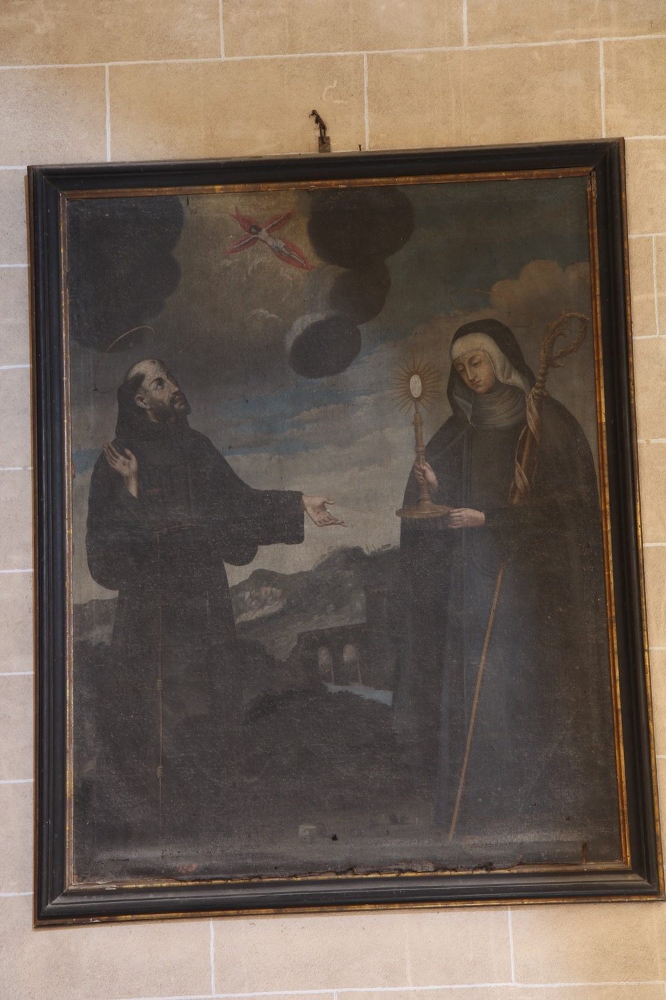

Aquest quadre representa dos dels sants franciscans més importants. A l’esquerra hi apareix sant Francesc d’Assís (1182-1226). Fill d’una família rica, tengué una jovintut mundana i malbaratadora, però, arran d’una visió mística de Crist crucificat, canvià completament de vida, repartí el seu patrimoni entre els pobres i va fer vot de pobresa. Dos anys abans de morir, Crist li imprimí els estigmes a les mans, als peus i al costat, que procurava amagar per humilitat. Va ser el fundador de l’Orde dels Frares Menors, o Orde Franciscà, una comunitat de frares humils, mendicants i predicadors.
A la dreta hi apareix santa Clara d’Assís (1194-1253). Als 18 anys, després d’escoltar predicar sant Francesc, santa Clara abandonà la seva família noble per convertir-se en la primera dona seguidora del sant. Fundà amb ell l’Orde de les Germanes Pobres, conegudes com a clarisses, una comunitat de monges pobres dedicada al treball, l’oració i l’ajuda als necessitats, i redactà la regla de l’orde, convertint-se així en la primera dona autora d’una regla monàstica.
En aquesta pintura, sant Francesc és representat de la manera tradicional, com un home jove, amb barbeta i tonsura. Vesteix l’hàbit franciscà amb el cordó amb tres nusos que representen els vots de pobresa, castedat i obediència de l'orde. El color marró de l'hàbit és el que es generalitzà al segle XIX. Mostra a les mans els estigmes que li imprimí Crist. El crucifix que contempla al cel fa referència a la visió mística del Crist crucificat que el portà a la vida religiosa.
Santa Clara hi apareix vestida amb l’hàbit de les clarisses: túnica fosca, toca blanca, vel negre i cordó a la cintura. El bàcul abacial la identifica com a abadessa. La santa sosté amb les dues mans una custòdia, el seu atribut iconogràfic més característic. Segons la tradició, quan uns serraïns amenaçaren el convent on vivia, santa Clara sortí a enfrontar-s’hi portant una custòdia amb el Santíssim Sagrament, de la qual emanà una llum fortíssima que va fer fugir espantats els atacants.